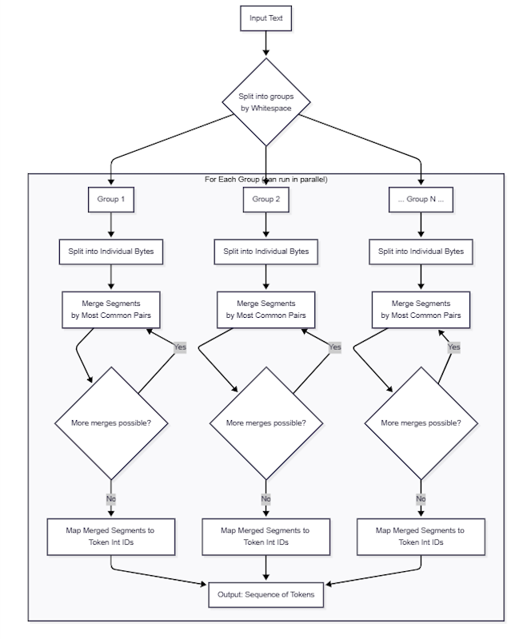

Understanding GPT Tokenization
Posted by bsstahl on 2026-06-12 and Filed Under: tools
Introduction
Tokenization isn't just a billing detail when using Large Language Models (LLMs), it shapes prompt budgets, context limits, and is often a key reason behind a model's surprising behavior. If you're building production systems or wrangling LLMs in real-world code, understanding how tokenization actually works isn't optional, it's engineering hygiene. Ever struggled with a model answer that gets mysteriously cut off, or wondered why your prompt "should fit" but doesn't? That's likely to be tokenization at work.
When I reached the point of needing to understand the Tokenization process better, I turned to the standard implementations to learn the mechanics, and found them nearly impenetrable. Tokenization tools are optimized for speed and efficiency, and the structure that makes them fast also makes them hard to follow. So I built a clarity-first C# implementation, one designed to make the Encode and Decode flow easy to inspect, not fast to run. This article walks through that implementation, covering the core replacement data, the encoding and decoding flow, and a few findings that show how tokenization reflects usage patterns in real data.
BPE Tokenization in natural language processing (NLP)
Why Tokenization?
NLP models use tokenization instead of working directly on raw UTF-8 bytes because tokens better match how we, as developers and users, experience language in code and text. Have you ever tried to shoehorn user input from a legacy system into an LLM and wondered why it doesn't behave exactly as you'd expect? That's where understanding tokenization offers an edge.
BPE (Byte-Pair Encoding) Tokenization is the process of converting text input into a numeric form that machine learning models can interpret. During this process, text strings are broken into groups by whitespace. These groups are broken into segments, individual bytes to start, which are then iteratively merged with the following segments in the same group based on the commonality of their usage. Eventually, these merged segments are mapped to one or more unique integer values called tokens. This numerical representation allows algorithms to perform operations on textual data since the models require quantitative inputs.

The cl100k Tokenization Model
The cl100k tokenization model is the one you'll use if you're building anything on OpenAI's GPT stack. Imagine it as a massive lookup table, translating your handwritten instructions, code comments, and edge-case data straight into numbers the model can reason about. This tokenizer is a core part of GPT model performance.
Token boundaries follow frequency, not human intuition, about what counts as a "word." To make this concrete: a less common presidential name like Coolidge has no single-token form at all in the cl100k model. This name, like many others, requires multiple tokens to represent, because it simply did not appear often enough in the training data to earn representation as a single token. On the other hand, Taylor maps to not one but two tokens: ID 16844 with a leading space, and ID 68236 without a space, because it appears frequently enough in both forms to each earn these dedicated entries. And the pattern is not limited to English: the Russian word размер (meaning "size" or "dimension", with a leading space) is token ID 100147, captured because Russian-language content appeared frequently enough in the training data to earn it a place in the table alongside common English words.
The cl100k Tokenizer Sample Code
The clarity-first, object-oriented implementation of a Tokenizer is written in C#, my language of choice. I suspect it will be easy to have it translated into nearly any other programming language if that will make it easier for you to understand. The goal of this implementation isn't speed, it's transparency. You can step through Encode and Decode to see exactly what's happening. The code is available on GitHub.
cl100k Tokenization Replacements
The key to the tokenization process using cl100k is the replacements data, found in the cl100k_base.tiktoken file in the code sample. This file contains a list of Base-64 encoded strings, and the token that each string represents.
While the official replacements file lists the token byte sequences, it can be difficult to tell the practical meaning of each token. This is especially true for whitespace, control characters, or unprintable bytes. For a fully decoded, human-readable table showing what each cl100k token actually represents (including both printable and non-printable tokens), see this table.
How Encode and Decode Work in the Sample
At a high level, the replacements file is the source of truth for both directions. Encode starts with text and produces token IDs. Decode starts with token IDs and reconstructs text.
Encode follows this flow:
- Convert the input string to UTF-8 bytes.
- Scan those bytes from left to right.
- At each position, find the best matching byte sequence from the replacements table.
- Emit the corresponding token ID.
- Advance the cursor and repeat until all input bytes are consumed.
Decode performs the inverse operation:
- Read each token ID in sequence.
- Look up the byte sequence for that token.
- Append those bytes to a buffer.
- Decode the final byte array as UTF-8 text.
Because both methods use the same replacement mappings in opposite directions, a valid input should round-trip cleanly: text → tokens → text.
Invalid UTF-8 Sequences
One of the things that concerned me when learning about this process was the fact that a number of tokens translated to invalid UTF-8 sequences. This seemed wrong at first because all input text is encoded as UTF-8 characters. One thing I have found as an engineer is that when something that I know works, doesn't smell quite right, there is a good chance I can learn something by exploring it. In this case, the "smell" is an artifact of training and encoding that generally appears with characters outside the subset most common in English.
I will explain with an example using token 1717. This token is replaced by the byte sequence 0x20 0xC3, which is a space character followed by a byte that does not represent valid UTF-8 on its own. This would be a problem if this token were ever used by itself or at the end of a sequence of tokens since that would leave a byte hanging that couldn't be translated into UTF-8. However, there is no way for a token like this to be used by itself or at the end of a sequence as long as the text it is representing has been properly encoded as UTF-8. Instead, such a token is always followed by at least one additional token, which will result in one or more valid UTF-8 characters.
If for our example, the 1717 token is followed by token 104 (0xAB -- also invalid on its own), it combines with the 0xC3 left over from the 1717 token, forming the sequence 0xC3 0xAB, which is the UTF-8 character ë. Similarly, if 1717 were combined with token 109 (0xB1 -- again invalid Unicode), we'd get the sequence 0xC3 0xB1, the Spanish character ñ.
This means that if we encode the Spanish exclamation Vaya, ñu ("Wow, wildebeest") into tokens, we would get the sequence [53,12874,11,1717,109,84]. Note the 1717,109 combination toward the end of the sequence. These integers represent UTF-8 bytes encoded into tokens. Some individual token values are not valid UTF-8 on their own, but are valid in the full sequence.
Intriguing Token Findings
Once the mechanics are clear, the replacement table becomes an interesting lens into what text patterns appear often enough to become single tokens.
Long Tokens
The longest token in the cl100k table is a sequence of 128 consecutive spaces (token ID 58040). That a string of whitespace this long earned its own entry suggests it appeared with remarkable frequency in the training data, likely from code formatting, markdown rendering, or structured document output. It is not alone: several other tokens exceed 42 characters in length, each a testament to how often that exact byte sequence appeared in the corpus.
Code is a Significant Contributor
The longest readable single token is the Objective-C method name .translatesAutoresizingMaskIntoConstraints (token ID 63570). At 42 characters, it's a single token for one simple reason: the training data was saturated with Apple's developer docs and implementations that use that method call. This is a good reminder that the tokenizer does not know what a "word" is; only what appears together, and how often. It also explains a lot about why these models can be used to generate code; they've absorbed a lot of it.
Alphabet as a Token
The string abcdefghijklmnopqrstuvwxyz, the complete lowercase English alphabet in order, is token ID 68612. That this specific sequence appears often enough to earn a dedicated entry reveals something about the corpus: tutorials, coding examples, password documentation, and educational content all tend to produce it. The tokenizer captured an artifact of how people teach.
The Weight of Common Words
The longest single-token word that is not specifically programming-related is responsibilities with a leading space (token ID 28423). Seventeen total characters, yet common enough in formal writing, corporate communication, and political text to be encoded as a single unit. Its presence reflects the weight of that particular kind of language in the training data.
Social Media's Fingerprint
The word unconstitutional with a leading space (token ID 53925) is a single token for a 17 character sequence. Its inclusion tells us something concrete about what dominated the training corpus: high-volume political discourse on the internet. The tokenizer does not have opinions, but it does reflect the conversations that shaped it.
Other Notable Tokens
Some tokens are notable not for their length but for what they suggest. The sequence -m (token ID 1474) is a fragment that appears constantly in command-line flags and markdown list items. On the other hand, mary (token ID 1563) in lowercase with no leading space, suggests it appeared frequently enough as a standalone common noun or name to earn its own entry, while 事 (token ID 30926), the Japanese kanji meaning "case" or "circumstance," confirms that the model's vocabulary extends meaningfully into non-Latin scripts, not just as byte fragments but as whole semantic units.
Redacted
Interestingly, █████ with a leading space (token ID 93429). A group of block characters used to represent redacted text is a single token. It appeared so frequently in legal documents, government releases, and journalism that the model treats it as a unit of meaning. There is something both darkly funny and genuinely informative about that: the tokenizer has learned that some things are meant not to be read.
The Tokenization of US Presidents Last Names
The tokenization of US presidents' last names is a useful example of how the model handles proper nouns. Some names are represented by a single token, while others require multiple tokens. In general, names that appear more frequently in training data are more likely to have single-token forms. Names that are less frequent, or less likely to appear outside historical contexts, are more likely to require multiple tokens.
Of the 40 distinct last names of US Presidents:
- 7 require more than 1 token to represent in any form
- 20 have only 1 way to represent their name in a single token; with a leading space and initial cap
- 8 have 2 ways to represent the name in a single token; an initial cap, with and without a leading space
- 3 presidents have 3 ways to represent their name in a single token
- Ford and Grant have all 4 possible ways
The fact that Ford and Grant have the most ways to represent their names makes sense since there are so many other reasons to write those words other than to mean the name of the President. The Presidents where the name cannot be represented in a single token generally indicates the lack of mentions of these Presidents in the training data. Since the corpus of training data is from the Internet, it makes sense that the Presidents who have a lower cultural significance in the Internet era would be less likely to have their names represented in a single token. Thus, Presidents Coolidge, Fillmore, Garfield, McKinley, Polk, Taft, and Van Buren all require more than one token to represent their names in any form. These names are also less likely to be represented in the training data as a reference to someone or something else.
Meanwhile, names like Washington, Jefferson, and Johnson, which are more common in the English language, have multiple representations in a single token. This is likely due to the frequency of these names in the US population, which in itself is a nod to the historical and cultural significance of the Presidents themselves.
Note: Derivatives of these names that are not actually the name of the President are not included here. For example: Obamacare. Empty cells indicate names that have no single-token representation.
| President | Tokens |
|---|---|
| Adams | 27329 (' Adams') |
| Arthur | 28686 (' Arthur'), 60762 ('Arthur') |
| Biden | 38180 (' Biden') |
| Buchanan | 85290 (' Buchanan') |
| Bush | 14409 (' Bush'), 30773 (' bush'), 100175 ('Bush') |
| Carter | 25581 (' Carter') |
| Cleveland | 24372 (' Cleveland') |
| Clinton | 8283 (' Clinton'), 51308 ('Clinton') |
| Coolidge | |
| Eisenhower | 89181 (' Eisenhower') |
| Fillmore | |
| Ford | 8350 ('ford'), 14337 (' Ford'), 45728 (' ford'), 59663 ('Ford') |
| Garfield | |
| Grant | 13500 (' grant'), 24668 (' Grant'), 52727 ('grant'), 69071 ('Grant') |
| Harding | 97593 (' Harding') |
| Harrison | 36627 (' Harrison') |
| Hayes | 53522 (' Hayes') |
| Hoover | 73409 (' Hoover') |
| Jackson | 13972 (' Jackson'), 62382 ('Jackson') |
| Jefferson | 34644 (' Jefferson') |
| Johnson | 11605 (' Johnson'), 63760 ('Johnson') |
| Kennedy | 24573 (' Kennedy') |
| Lincoln | 25379 (' Lincoln') |
| Madison | 31015 (' Madison') |
| McKinley | |
| Monroe | 50887 (' Monroe') |
| Nixon | 42726 (' Nixon') |
| Obama | 7250 (' Obama'), 45437 ('Obama') |
| Pierce | 50930 (' Pierce') |
| Polk | |
| Reagan | 35226 (' Reagan') |
| Roosevelt | 47042 (' Roosevelt') |
| Taft | |
| Taylor | 16844 (' Taylor'), 68236 ('Taylor') |
| Truman | 80936 (' Truman') |
| Trump | 3420 (' Trump'), 16509 ('Trump'), 39155 (' trump') |
| Tyler | 32320 (' Tyler'), 100224 ('Tyler') |
| Van Buren | |
| Washington | 6652 (' Washington'), 39231 ('Washington'), 94771 (' washington') |
| Wilson | 17882 (' Wilson'), 92493 ('Wilson') |
Practical Implications for Prompt Design and Debugging
The engineering reality of tokenization emerges when we try to design, debug, or optimize prompts for GPT models. Consider a practical scenario:
Suppose you're designing a prompt for a model with a fixed token budget. You estimate your text should fit easily based on a word count, but your output keeps cutting off. Investigating with a tokenizer, you find that certain whitespace, rare words, or multi-language fragments are converting into many tokens, sometimes two or three times more than expected. For instance, using a phrase like " responsibilities" (which is a single token) is efficient, but a phrase with uncommon names or special symbols may be split into several tokens, reducing your available space for prompts and responses. In multilingual cases, e.g. “¡Bienvenido, размер!”, mixing Spanish and Russian increases token count further because those languages use byte sequences with less efficient mapping.
Knowing this, you can plan your prompts:
- Analyze with the tokenizer to see real token length before submitting text.
- Avoid language or formatting that explodes token count, especially near prompt limits.
- Catch why a model output is unexpectedly short; often, it's not your word count, but unseen token inflation.
A common heuristic is to assume that English words in typical text cost, on average, roughly 1⅓ (one and one-third) tokens per word. This means that a phrase consisting of 3 generic English words, could be estimated at 4 tokens. As we've seen however, that is only a reasonably safe assumption using very typical, English language statements. Once we start getting into programming jargon, or involving other languages or character sets, these estimates become far less valuable. As a result, prompt designers, engineers, and anyone working with LLMs should not just count words, they should analyze tokenization directly to make decisions about what fits, what fails, and why.
Conclusion
Tokenization in cl100k is best understood as a byte-sequence mapping layer between text and model input, not a simple word splitter. Once that model is clear, behavior that looks strange at first, such as token values containing incomplete UTF-8 fragments, becomes expected and understandable in sequence context.
The practical takeaway is that tokenizer awareness improves engineering decisions. Understanding this process helps with prompt design, token budgeting, multilingual handling, and debugging surprising model output. If you step through Encode and Decode with your own examples, the mechanics become intuitive very quickly. To achieve this understanding, the sample code on GitHub is a good place to start.